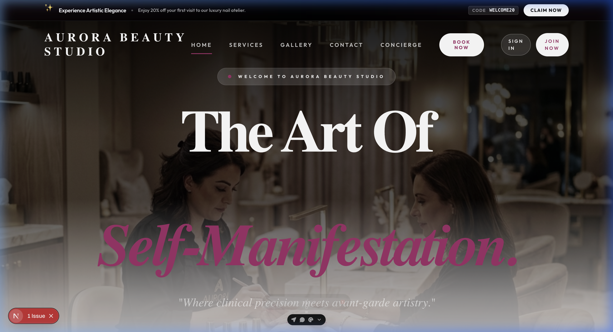
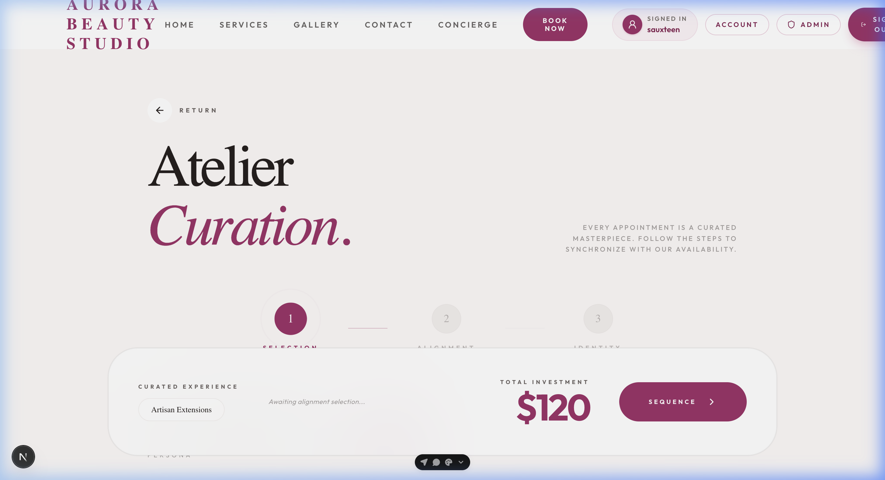
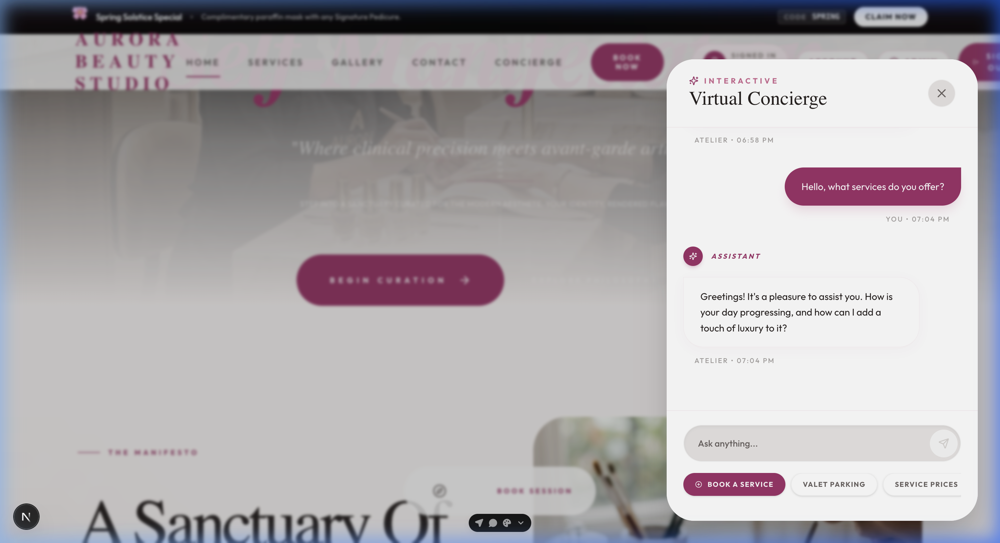
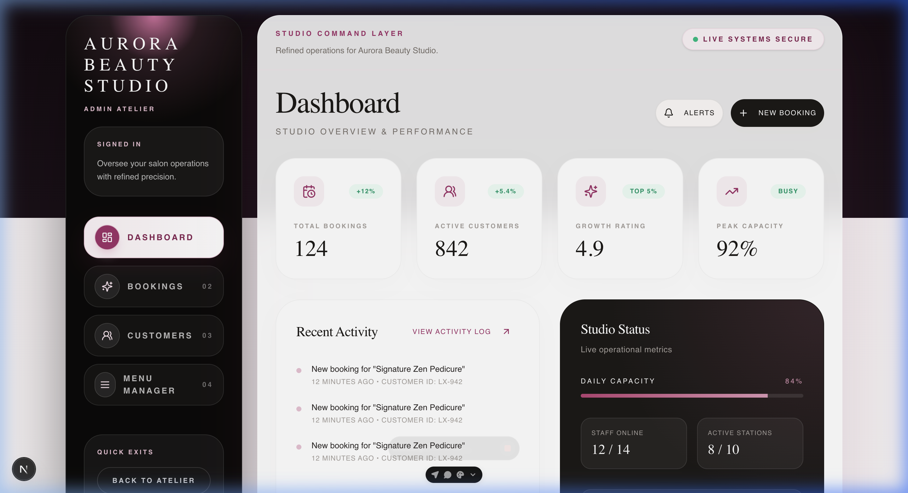

A high-performance white-label booking, CRM, and management system for appointment-based service businesses (spas, salons, clinics). Built with Next.js 16, Express 5, Prisma, and PostgreSQL, it features real-time staff sync, BullMQ background queues, and an intelligent Gemini AI conversational assistant.

The responsive storefront features custom client-specific branding, automated layout adjustment for RTL and dark modes, and interactive services lists.

An interactive step-by-step booking form built using Next.js 16 and shadcn/ui. Validates service additions, selects technician availability dynamically, and coordinates appointment slots with the backend server.

An intelligent client-facing chat assistant using the Gemini API. Automatically loads store catalogue and details, answering service questions and guiding clients to the scheduling step conversationally.

A robust, full-featured back-office giving receptionists and managers live control over booking records, service catalogs, tech availability, coupon promotions, and customer CRM files.
Zod-validated preset schemas (Spa, Clinic, Barber, Salon) dynamically map brand colors, services catalog, active features, and hours into the database in under 10 seconds without code modifications.
Implements a Socket.io broadcast interface to push real-time booking changes, technician schedule revisions, and client support messages directly to the staff board without page refreshes.
Uses BullMQ and Redis as a background task processor to schedule and throttle Twilio SMS review requests, invoice emails, and VIP credit accruals, shielding the Express API from thread blocks.
An elegant, client-facing booking concierge assistant using the Gemini API. Sanitizes and reads current scheduling rules, catalog listings, and store policies to guide clients through bookings off-hours.
Handles customer session deposits, VIP memberships, and automatic QR/barcode gift card creation with raw-body webhook verification in the Express backend.
Problem: Transitioning between service verticals required changing layout
strings and labels across dozens of components (e.g. changing 'Service' to 'Treatment' or
'Technician' to 'Doctor').
Solution: Developed a vocabulary mapper that loads a JSON preset from
PostgreSQL and swaps UI terminology tokens globally at run-time, allowing instant tenant
customization without code churn.
Problem: Multiple users checking out simultaneously could book the same
technician at the same hour, causing database race conditions.
Solution: Enforced atomic checks using transactional raw-queries in Prisma,
validating time slot vacancy at checkout execution, while pushing real-time blocked status to
other open clients via Socket.io.
Problem: Network delays from Twilio APIs and email servers blocked Express
worker processes, causing request timeouts during peak booking hours.
Solution: Implemented a worker-dispatcher pattern using Redis and BullMQ,
deferring low-priority notifications to background processes with configured retry-backoffs and
concurrency limits.
Problem: Catalog images and dynamic layouts caused slow mobile performance,
degrading Google Search Console core web vitals.
Solution: Integrated ImageKit transformation parameters on images, preset
static width/height layouts in Next.js to eliminate Layout Shifts (CLS), and indexed relational
tables on PostgreSQL to lower query delays under 50ms.